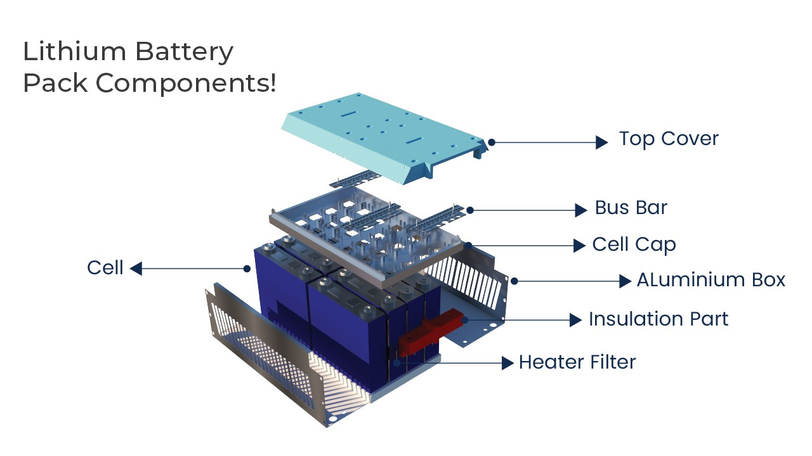

Lithium battery packs are the workhorses that power our electronics, but their creation involves a complex dance of several processes. Let's delve into the typical flow of a lithium battery pack production line:
- Sorting and Grouping: Not all batteries are created equal, even within the same batch. This step involves meticulously sorting batteries based on their capacity, ensuring consistent performance across the entire pack.
- Automatic Welding: Once sorted, the batteries are precisely welded together using techniques like laser welding. This creates a strong and reliable connection between the batteries within the pack.
- Semi-finished Product Assembly: After welding, the core of the pack is complete. However, it's not ready for action yet. Additional components like bus bars (conductors), protective boards (safety features), and connectors are meticulously assembled to create a semi-finished product.
- Aging Test: Safety and performance are paramount. The semi-finished pack undergoes a rigorous aging process, simulating real-world use cycles. This helps identify any potential weaknesses and ensures the pack delivers optimal performance and longevity.
- PACK Detection: A thorough inspection follows the aging test. Specialized equipment meticulously checks the pack for any electrical or physical defects. Only packs that pass this stringent screening process move forward.
- PACK Packaging: Finally, the pack gets dressed for success. It's encased in sturdy and secure outer packaging, complete with necessary labeling and safety information. This ensures safe transportation and protects the pack during use.
A Look Inside the Pack:
A lithium battery pack is more than just batteries grouped together. It's a complex system that includes various crucial components:

- Battery Pack: The core, consists of sorted and welded batteries.
- Bus Bar: Conducts electricity between the batteries within the pack.
- Protective Board: Monitors and safeguards the pack against overcharging, over-discharging, and overheating.
- Outer Packaging: Provides structural integrity and protects the pack from environmental factors.
- Connector: Enables connection with the device using the pack.
Key Considerations for PACK Production:
- Battery Consistency: For optimal performance, batteries within the pack need a high degree of consistency in terms of capacity and other parameters.
- Cycle Life: While single batteries may have a longer cycle life, the pack itself might have a shorter lifespan due to factors like variations in usage patterns.
- Operating Conditions: PACKs have specific limitations regarding charging and discharging currents, temperature ranges, and charging methods.
- Protection and Monitoring: Battery packs require continuous monitoring and protection for voltage, temperature, and current to ensure safe and efficient operation.
The Automation Challenge:
Despite advancements, automation in PACK production faces hurdles due to inconsistencies in battery pack standards. However, the industry is actively working towards developing automated solutions to improve production efficiency and cost-effectiveness.
By understanding the intricate flow of a lithium battery pack production line, we gain a deeper appreciation for the technology powering our everyday devices.